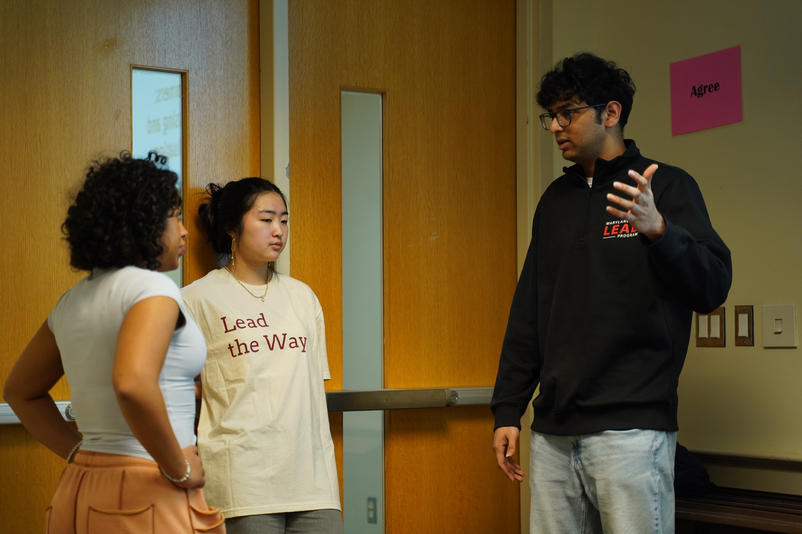

[Name]
[Their role / relationship]
[What they taught you, in a few sentences.]
LCSL Internship Showcase · 2025–2026
A year of learning about myself, the people around me, and what it means to lead in service of a community.
Begin ↓
02 · Meaning
[What did you hope to learn when you started? How has that shifted?]
[What have you learned about yourself, the people you worked with, and your community?]
03 · Defining Moments
[Month, Year]
[What happened, what you felt, what it taught you.]
[Month, Year]
[What happened, what you felt, what it taught you.]
[Month, Year]
[What happened, what you felt, what it taught you.]
04 · People
[Their role / relationship]
[What they taught you, in a few sentences.]
[Their role / relationship]
[What they taught you, in a few sentences.]
[Their role / relationship]
[What they taught you, in a few sentences.]
05 · The Shift
I used to think…
[Old belief or assumption.]
Now I think…
[New understanding.]
06 · Future
[How does what you learned here connect to your professional and personal goals beyond the internship?]
[What would you do differently if you could live this year again?]
Thank you.
— [Your Name]